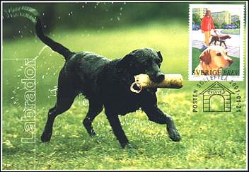
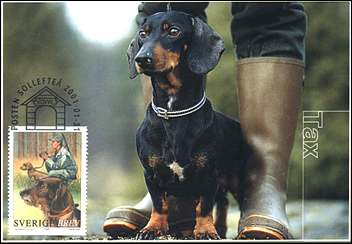
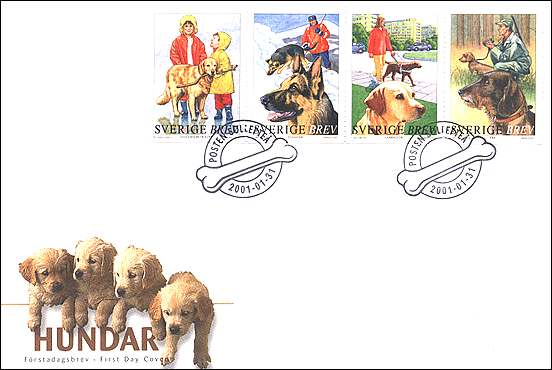
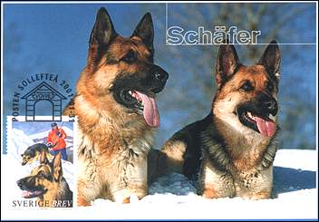
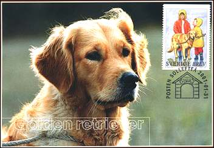
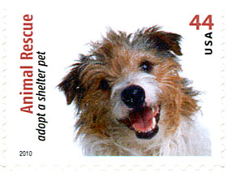
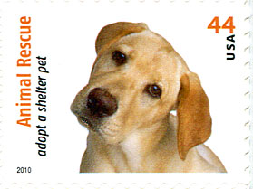
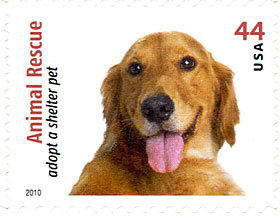
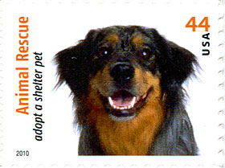
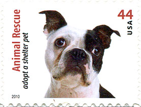

Links to fauna stamps on this site:
| Published:
02/17/2001. Revised: . Copyright © 2001 - 2010 by Victor Manta, Switzerland. All rights reserved worldwide. |
|
| Dogs on Stamps |
Stamps I Cannot Resist
Dedicated to Bobic
The dog was the first animal man let into his house - or rather cave, because that is how long ago it was. We discovered that wild dogs were good at hunting and at watching. If you tamed them, you could let them share your sleeping quarters in the winter. Live dogs are warming. So we had our first domestic animal.
 |
 |
Dogs have an excellent sense of smell. A bloodhound can follow a human trail after more than 50 hours and an avalanche dog can indicate a person buried under 10 m of snow. Dogs can find invisible mould and rot in houses and poles. Dogs lead the blind and help deaf people notice signals.

The subtitle of this page is "Stamps I Cannot Resist", because I have bought these stamps even I don't collect dogs on stamps. This page is dedicated to Bobic, the dog of my childhood. The puppy dogs shown on the FDC look exactly like her children. One day Bobic lost my father in a crowded town and yet found the way home, after running 45 Km, that took her three long days and nights. She has probably used as marks the tires' traces (or the smell) from the car in which she and my father traveled. Bobic came back beaten and wounded, drunk some water and then slept during two days and two nights. During the sleep she barked and fought some invisible enemies. Bobic was killed during a dark night, by a thief, when she tried to protect our property. Of course I'll never forget my brave, intelligent and faithful friend. For more about Bobic see the link below.
 |
 |
These Swedish stamps, FDC, and maximum cards were issued the 31st January 2001. A booklet of four stamps was also issued, but isn't shown on this page. The stamps were drawn by Ingemar Jacobson after photos by a.o. Asa Lindholm, Johnny Albertsson/GreatShots and Stefan Örtenblad/Naturbild. Prints: offset, Sweden Post Stamps. FDC illustration (photo from GreatShots) and cancellation: Ölof Baldurdottir. Source for the info on Swedish stamps: FDC inlet.
A nice reaction on the RCSD newsgroup. "Victor: Once again you have given us a thing of beauty. Thank you for sharing this page with us. Blair." 2/25/01.
 |
 |
On April 30, 2010, in North Hollywood, California, the Postal Service™ issued a 44–cent, Animal Rescue: Adopt a Shelter Pet special stamp in ten designs, designed by Derry Noyes of Washington, DC.
 |
 |
With these 10 stamp designs, the U.S. Postal Service hopes to raise awareness of the need to adopt shelter pets.

The pets depicted on the stamps were photographed by Sally Andersen-Bruce near her home in New Milford, Connecticut. All had been homeless at one time; all but one had been adopted when they were photographed. Source and Copyright: USPS.com, where I ordrered and from whom I promptly received these nice stamps.
Links to fauna stamps on this site:
| Published:
02/17/2001. Revised: . Copyright © 2001 - 2010 by Victor Manta, Switzerland. All rights reserved worldwide. |
|